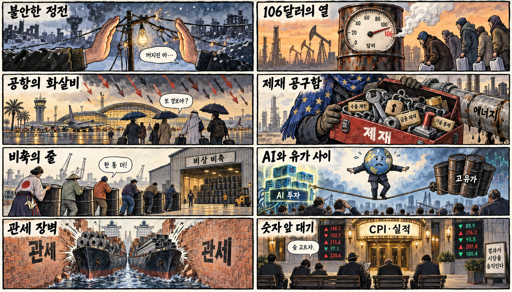
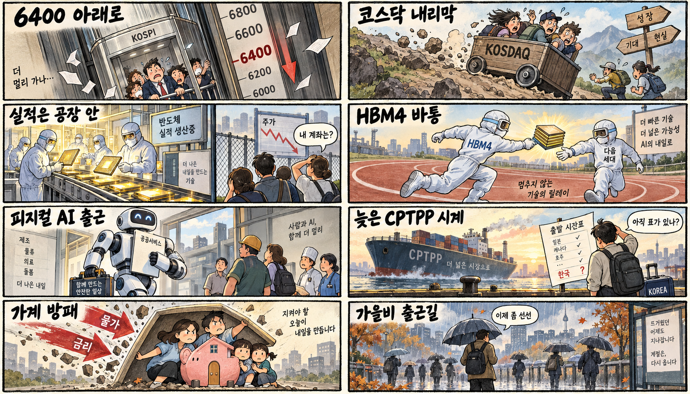

01
메타 · 727.97→742.96달러 · +2.06%
내용요약 시가 대비 +2.06%로 조사한 대형 기술주 중 가장 강한 흐름을 보였습니다.
예상여파 플랫폼 대형주의 방어력은 우호적이지만 기술주 전반 확산 여부는 실적 전망으로 확인해야 합니다.
MORNING_BRIEFING_20261013
작성 시각: 2026-10-13 06:37 KST · 직전 미국 정규장과 2026-10-13 KST 당일 공개 기사 기준
직전 미국 정규장인 10월 12일 뉴욕증시는 다우 +0.38%, S&P 500 -0.06%, 나스닥 -0.44%로 혼조 마감했습니다. 국제유가 상승과 반도체주 약세가 기술주를 눌렀고 시장은 기업 실적과 물가 지표를 기다렸습니다. 전일 KOSPI가 -3.65% 급락한 뒤라 오늘 한국 증시는 반도체 반등 여부, 원·달러 환율과 외국인 선물 수급을 우선 확인해야 합니다.
| 지수 | 종가 | 등락률 | 한국 증시 시사점 |
|---|---|---|---|
| 다우존스 | 51,850.55 | +0.38% | 경기민감주 방어력은 우호적이나 고유가와 금리 부담을 함께 점검 |
| S&P 500 | 7,807.24 | -0.06% | 경기민감주 방어력은 우호적이나 고유가와 금리 부담을 함께 점검 |
| 나스닥 종합 | 27,245.90 | -0.44% | 반도체 약세와 성장주 조정은 국내 기술주 심리에 부담 |
다우 +0.38%, S&P 500 -0.06%, 나스닥 -0.44%로 마감했습니다.
휴전 불확실성과 사우디 공항 피격으로 브렌트유가 106달러를 웃돌았습니다.
KOSPI -3.65%, KOSDAQ -4.83% 뒤 반등보다 변동성 관리가 우선입니다.
미국 데이터센터 32GW 전력 부족이 HBM 투자 일정의 새 변수로 떠올랐습니다.
10월 12일 보고서는 연휴 뒤 재개장 전 시가·수급 검증이 불가능해 공식 추천을 내지 않았습니다. 게시 당시 판단을 유지하며 사후 종목을 추가하지 않습니다.
| 시장 | 종가 | 등락률 | 기준 |
|---|---|---|---|
| KOSPI | 6,384.24 | -3.65% | 10월 12일 · 시가 대비 -2.95% |
| KOSDAQ | 849.19 | -4.83% | 10월 12일 · 시가 대비 -4.10% |
| 다우존스 | 51,850.55 | +0.38% | 미국 10월 12일 정규장 |
| S&P 500 | 7,807.24 | -0.06% | 미국 10월 12일 정규장 |
| 나스닥 종합 | 27,245.90 | -0.44% | 미국 10월 12일 정규장 |
메타 +2.06%, 애플 +0.83%로 대형 플랫폼이 방어력을 보였습니다.
월마트 +1.42%, 액센츄어 +1.92%로 상대 강세였습니다.
크라우드스트라이크 -4.84%, 슈퍼마이크로 -3.17%로 밀렸습니다.
마벨 -3.14%, 오라클 -2.95%, 브로드컴 -1.38%였습니다.
내용요약 시가 대비 +2.06%로 조사한 대형 기술주 중 가장 강한 흐름을 보였습니다.
예상여파 플랫폼 대형주의 방어력은 우호적이지만 기술주 전반 확산 여부는 실적 전망으로 확인해야 합니다.
내용요약 시가 대비 +1.92%로 정보기술 서비스가 상대 강세를 보였습니다.
예상여파 기업 인공지능 도입 수요 기대를 지지하지만 신규 수주와 마진이 실제로 개선되는지 봐야 합니다.
내용요약 시가 대비 -4.84%로 조사 종목 중 가장 큰 낙폭을 기록했습니다.
예상여파 고평가 성장주 변동성이 커졌다는 신호로 국내 소프트웨어·보안주 추격 매수에 부담입니다.
내용요약 시가 대비 -3.23%로 우주·고변동 성장주가 약했습니다.
예상여파 위험선호 둔화가 테마 성장주로 번질 수 있어 수주보다 현금흐름과 밸류에이션을 우선 봐야 합니다.
내용요약 시가 대비 -3.17%로 인공지능 서버 하드웨어 약세가 이어졌습니다.
예상여파 국내 서버 부품주 심리에 부담이며 데이터센터 전력 병목이 실제 납품 일정에 미치는 영향을 확인해야 합니다.
미국 나스닥과 반도체주 약세, 국제유가 상승은 전일 급락한 국내 성장주에 추가 부담입니다. 다만 다우와 일부 플랫폼주는 방어력을 보였습니다. 장 초반 반도체 대형주의 저가 매수보다 원·달러 환율, 외국인 선물 순매수 전환과 전일 저점 방어를 먼저 확인해야 합니다.
오늘은 추천 없음 — 현금 관망
전일 KOSPI -3.65%, KOSDAQ -4.83% 급락 뒤 미국 반도체까지 약세여서 하락 변동성이 충분히 안정됐다고 보기 어렵습니다. 전일까지의 수급·컨센서스·30건 이상 보정 표본을 모두 확보해 종합점수 75점·상승확률 60%·예상 손익비 1.5를 동시에 검증한 종목이 없어 공식 후보를 제시하지 않습니다.
관심 연결종목 차세대 HBM, 데이터센터 전력, 피지컬 AI 관련주는 관찰 대상일 뿐 매수 추천이 아닙니다. 갭 반등 시 추격매수하지 않습니다.
외국인 선물 순매수 전환과 전일 저점 방어를 확인합니다.
기업 전망과 CPI 대기 심리가 금리와 성장주에 미치는 영향을 봅니다.
에너지 휴전 이행과 사우디 공항 공격의 확산 여부를 점검합니다.
출근길 강수와 밤부터 기온 급락에 대비합니다.
핵심 요약: 인공지능 투자 경쟁의 병목이 전력으로 이동하는 가운데 마이크로소프트의 자체 칩 확대와 HBM4 경쟁이 공급망 재편을 재촉합니다. 경량 모델과 로봇 인공지능 투자는 응용 시장을 넓히고 있습니다.
내용요약 미국 인공지능 데이터센터 프로젝트가 32GW 규모의 전력 부족에 직면해 전력 확보가 HBM 수요의 새 변수로 떠올랐다는 당일 보도입니다.
예상여파 서버 주문보다 계통 연결과 발전원이 투자 일정의 병목이 될 수 있어 전력기기·냉각·메모리 공급망을 함께 봐야 합니다.
내용요약 마이크로소프트가 엔비디아 의존도를 낮추기 위해 자체 인공지능 칩 100만개 투입을 추진한다는 당일 보도입니다.
예상여파 가속기 조달 다변화가 커스텀 칩과 HBM4 수요를 넓힐 수 있지만 실제 배치 일정과 성능 검증이 관건입니다.
내용요약 삼성전자와 SK하이닉스가 HBM 이후 차세대 인공지능 메모리 기술 경쟁을 본격화한다는 당일 보도입니다.
예상여파 메모리 호황의 지속성은 HBM4 양산 수율, 고객 인증과 범용 메모리 가격을 함께 확인해야 합니다.
내용요약 앤트로픽이 반복 업무 비용을 낮춘 경량 모델 클로드 하이쿠 5.5를 공개했다는 당일 보도입니다.
예상여파 저비용 모델 경쟁이 기업 도입을 늘릴 수 있으나 가격 인하가 제공사의 수익성에 주는 영향도 살펴야 합니다.
내용요약 딥시크가 4억달러 규모 로봇 인공지능 시드 투자에 참여하며 피지컬 AI로 영역을 넓힌다는 당일 보도입니다.
예상여파 언어모델 경쟁이 로봇 학습과 실제 작업 데이터로 이동하며 센서·제어·안전 검증 투자가 커질 수 있습니다.
핵심 요약: 에너지 휴전 발표 뒤에도 공습이 이어지고 사우디 공항이 피격되며 유가가 다시 뛰었습니다. 유럽의 추가 제재 요구와 아시아 비축 확대는 지정학 위험이 물가·통화정책으로 번지는 경로를 보여줍니다.
내용요약 에너지 휴전 발표 뒤에도 러시아의 공습이 이어지며 국제유가가 2% 올랐다는 당일 보도입니다.
예상여파 휴전의 실효성에 대한 의문이 커져 에너지·운송 비용과 위험자산 변동성이 당분간 높게 유지될 수 있습니다.
내용요약 사우디 공항 피격과 러시아 에너지 시설 공격이 겹치며 국제유가가 급등했다는 당일 보도입니다.
예상여파 중동 항공·물류 차질과 원유 공급 불안이 물가 기대와 각국 통화정책에 다시 부담을 줄 수 있습니다.
내용요약 유럽연합이 미국과 러시아를 경유한 합의를 비판하며 추가 제재 필요성을 제기했다는 당일 보도입니다.
예상여파 동맹 내 해법 차이가 커지면 휴전 협상과 대러 제재의 지속 가능성이 동시에 흔들릴 수 있습니다.
내용요약 일본이 중동 공급 위험에 대응해 아시아 국가들에 석유 비축 확대를 촉구했다는 당일 보도입니다.
예상여파 비축 수요가 단기 유가를 지지하는 한편 수입국의 재정·무역수지 부담을 키울 수 있습니다.
내용요약 나토 유럽연합군 최고사령관이 러시아에 동맹국 공격을 경고했다는 당일 보도입니다.
예상여파 군사적 억지와 휴전 협상이 동시에 진행되면서 오판 위험과 유럽 방위비 부담이 커질 수 있습니다.

핵심 요약: 코스피 6300선 급락 뒤 환율과 외국인 수급이 오늘 시장의 핵심입니다. 차세대 메모리와 피지컬 인공지능 정책은 중장기 성장축이지만 통상 지연과 가계 부담, 가을비는 실물경제의 경계 요인입니다.
내용요약 코스피가 6300선으로 급락하고 원화 가치도 흔들리면서 증권가 전망의 불확실성이 커졌다는 당일 보도입니다.
예상여파 고유가·환율·반도체 조정이 동시에 작용해 반등 시도보다 변동성 관리와 외국인 수급 확인이 우선입니다.
내용요약 삼성전자와 SK하이닉스가 HBM 이후 차세대 인공지능 메모리 기술 경쟁에 나섰다는 당일 보도입니다.
예상여파 실적 호조에도 주가가 약한 만큼 기술 우위가 고객 인증과 수익성으로 이어지는지 확인해야 합니다.
내용요약 정부가 피지컬 인공지능 육성과 생활·공공 분야 확산 정책에 속도를 낸다는 당일 보도입니다.
예상여파 로봇·제조·공공서비스의 실증 기회가 늘 수 있으나 예산 집행과 현장 도입 성과가 중요합니다.
내용요약 한국이 멈춘 사이 CPTPP 외연이 확대돼 가입 지연 시 수출 손실이 커질 수 있다는 당일 보도입니다.
예상여파 통상 협상 지연이 공급망과 수출시장 접근성에 영향을 줄 수 있어 산업별 득실 검토가 필요합니다.
내용요약 전국에 가을비가 내리고 밤부터 기온이 크게 떨어질 것이라는 당일 예보입니다.
예상여파 출근길 교통과 야외 일정에 불편이 예상되며 급격한 기온 변화에 건강 관리가 필요합니다.
